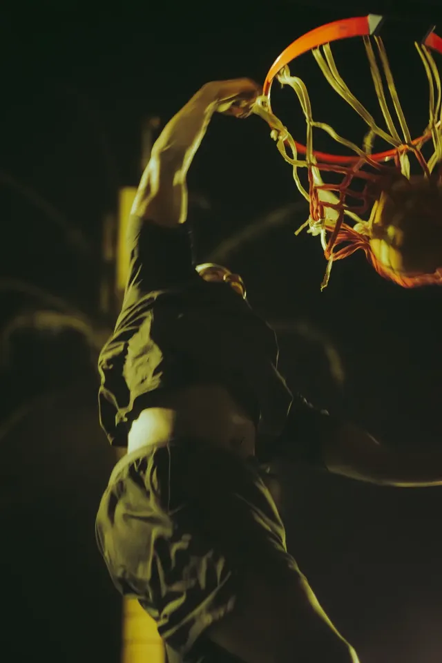

Chapitre 05 / 06 · Projets d'expositionChapter 05 / 06 · Exhibition projects
Mécanique passionnelle
Une série nocturne née des matchs de basket improvisés entre amis, tard dans la nuit, sous la lumière artificielle du terrain. Des joueurs de toutes les générations et de tous les horizons s'y retrouvent. J'y cherche la mécanique du geste (courir, pivoter, défendre, sauter), devenue chorégraphie collective, et celle des émotions : la colère d'une faute contestée, la joie d'un panier décisif, la respiration lourde après l'effort. Malgré la fatigue et le travail du lendemain, chacun revient sur le terrain. Le temps d'un match, les différences s'effacent : il ne reste que le jeu, une rivalité saine et la fraternité.A night series born from pickup basketball games among friends, late at night, under the court's artificial light. Players of every generation and background meet there. I look for the mechanics of the gesture (running, pivoting, defending, jumping), turned into a collective choreography, and the mechanics of emotion: the anger of a disputed foul, the joy of a decisive basket, the heavy breathing after the effort. Despite the fatigue and work the next morning, everyone keeps coming back to the court. For the length of a game, differences fade: all that remains is the game, healthy rivalry and brotherhood.
- RôleRole
- PhotographiePhotography
- LieuPlace
- Dakar · Olympique Club
- AnnéesYears
- 2025
- L'œuvreThe work
- 10 photographies10 photographsTirages giclée sur Canson Rag Photographique 310 g/m²Giclée prints on Canson Rag Photographique 310 g/m²150 × 100 cm au total150 × 100 cm overallContrecollés sur Dibond, cadre galerie noir matMounted on Dibond, matte black gallery frame

SélectionSelection
Toutes les photos (10)All photos (10)
Autres projetsMore projects
 As salam wa al‑‘usra2025 · 19 photos
As salam wa al‑‘usra2025 · 19 photos La bourrasque de la presqu'île du Cap-VertDakar · 18 photos
La bourrasque de la presqu'île du Cap-VertDakar · 18 photos The Bashment10 soirées photographiées sur au moins 100 · 100e édition fêtée en octobre 202510 nights photographed out of at least 100 · 100th edition celebrated in October 2025
The Bashment10 soirées photographiées sur au moins 100 · 100e édition fêtée en octobre 202510 nights photographed out of at least 100 · 100th edition celebrated in October 2025 La Forge3 saisons photographiées3 seasons photographed
La Forge3 saisons photographiées3 seasons photographedUn projet en tête ?Have a project in mind?
Soirée, concert, équipe, marque ou shooting : écrivez-moi, je vous réponds avec plaisir.A party, a concert, a team, a brand or a shoot: write to me, I’d love to hear from you.